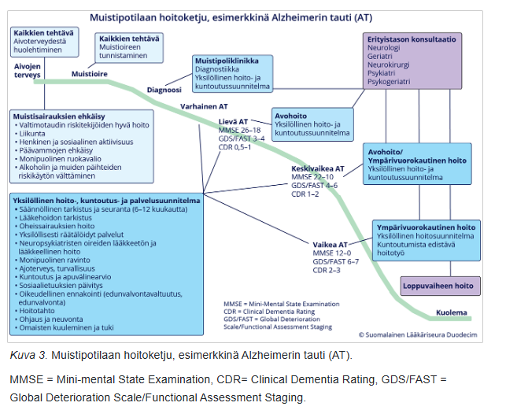
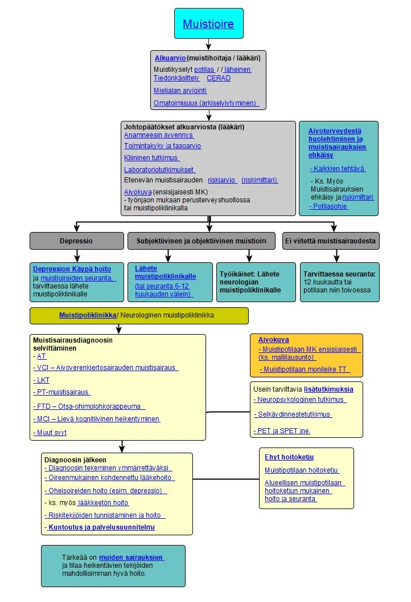
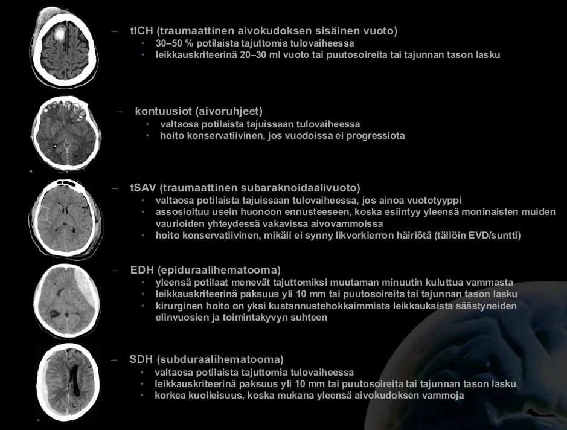
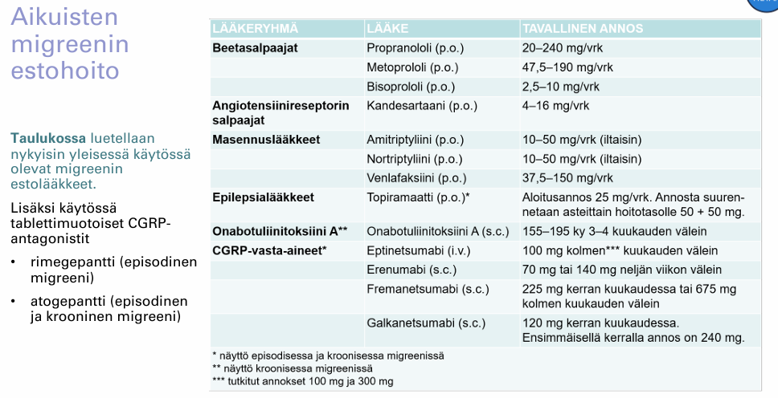
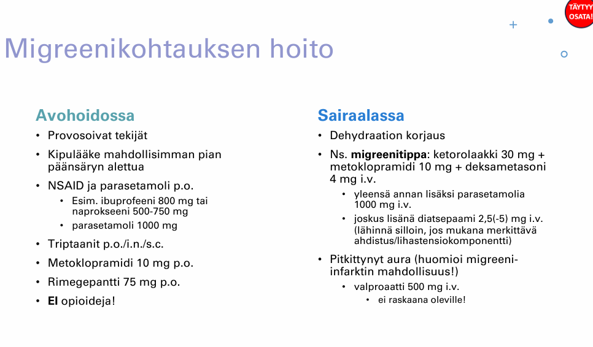

Kappale 10 2018
10.1 Tentti
Taas potilastapauksista vain aiheet: Parkinson, polyneuropatia, MS-taudin ensimmäinen pahenemisvaihe; skipataan taas.
10.1.1 Kroonisesti muistisairaan hoitopolku perusterveydenhuollosta erikoissairaanhoitoon
Kts. 2019 viimeinen kysymys tarkempaa selvittelyä varten. Periaatteessa PTH:ssa havaitaan oirekuva, tehdään alkuselvittelyt (CERAD, mahdollisesti MoCA; sekundaaristen syiden labrat, masennuksen selvittely) ja tehdään tarvittaessa lähete muistisairausepäilystä ESH (alle 70-75-vuotiaista herkästi lähete ESH, iäkkäistä paikallisen saatavuuden rajoissa geriatrin konsultaatio; työikäiset ohjataan neurologille, ellei selkeää hyvänlaatuista taustaselittäjä (työikäisten alkuselvittelyt usein työterveyshuollossa)). Diagnostiikan apuna ESH:ssa MRI, selkäydinneste; tarvittaessa PET-kuvantaminen, SPECT-kuvantaminen, neuropsykologiset tutkimukset yms muut tarkentavat tutkimukset. Aloitetaan mahdollisuuksien mukaan lääkehoito (esim. Alzheimerin taudissa yleensä asetyylikoliiniesteraasin estäjä ja keskivaikeassa/vaikeassa taudissa lisäksi memantiini).
Kun diagnoosi on asetettu ja lääkitys vakiintunut, vastuu hoidosta siirtyy yleensä takaisin perusterveydenhuoltoon. Yleensä potilasteksteissä on suunnitelma lääkityksen tehostamisesta ja tilanteen seuraamisesta. Tarvittaessa ESH:n konsultaatio (vanhuksilla siis usein geriatria; neurologia vastaaalle 65-70-vuotiaiden henkilöiden muistisairauksien tutkimisesta ) matalalla kynnyksellä.


10.1.2 Aivovammapotilaan tärkeimmät esitiedot ja mitkä kallonsisäiset vammat sopii aivovammapotilaalle?
- Vammamekanismin kuvaaminen; varsinkin siis vammaenergian arvioiminen
- Mahdollisimman tarkka tapahtuma-ajankohta
- Tajuttomuus ja sen kesto
- Potilaan muistikuvat ennen vammautumista ja sen jälkeen (posttraumaattisen amnesian (PTA) kesto)
- Kouristelu
- Sekavuus, desorientaatio
- Päänsärky, pahoinvointi ja oksentelu
- Neurologiset puutosoireet
- Oireiden kehittyminen (etenevätkö)
- Käytössä olevat lääkkeet, erityisesti veren hyytymiseen vaikuttavat
- Päihteiden käyttö
- Aiemmat aivovammat ja –sairaudet
- Muut sairaudet
- Aikaisempi toimintakyky
Kaikilta aivovammapotilailta tulee selvittää ja kirjata vähintään GCS, PTA:n kesto ja tajuttomuuden kesto. Niiden perusteella määritetään kliinisesti vamman vaikeusaste.
Kallonsisäisistä vammoista yleisimpiä ovat epi- ja subduraalihematoomat, subaraknoidaalivuodot, aivokontuusiot (ja usein niihin liittyen intrakerebraaliset verenvuodot) ja diffuusit aksonivauriot (DAI; syntyy yleensä kiihdytys-hidastuvuusvammassa, kun aksonit venyttyvät ja vaurioituvat; usein vaikeita ja pitkäkestoisia tajuttomuuksia aiheuttavia). Tietysti myös kallonmurtumat ovat oma kapittelinsa.

10.1.3 Migreenin hoito (niin kohtaushoito kuin estohoito)
- perusterveydenhuollossa
- perusterveydenhuollossa
- neurologian polilla (mitä lääkkeitä voidaan määrätä, joita ei yleensä PTH:ssa voida)
- päivystyksessä?
Migreenikohtausten päänsäryn hoidossa ensisijaiset lääkkeet ovat NSAIDit ja parasetamoli p.o. (Esim. ibuprofeeni 800 mg tai naprokseeni 500-750 mg ja parasetamoli 1000 mg; tulee siis ottaa suhteellisen korkea annos, jotta apua saadaan). Kipulääke otetaan tyypillisesti mahdollisimman pian päänsäryn alettua. Opioideja ei käytetä (eivät okein toimi kovin hyvin)! Pahoinvointiin voidaan ottaa metoklopramidia esim. 10 mg p.o.
Mikäli ei saavuteta hoitovastetta (hoitovasteen saavuttaminen = kivuttomuus tai kivun merkittävä väheneminen 2 t:n kuluessa lääkkeen otosta, vaikutuksen kesto 24 t:n ajan sekä lisäksi lääkkeen vähäiset haittavaikutukset ja toimintakyvyn palautuminen.), suositellaan seuraavien kohtausten hoitoon triptaaneja (monoterapiana yleensä). Triptaanien vasta-aiheita ovat mm. iskeeminen sydänsairaus (sepelvaltimotauti, aikaisempi sydäninfarkti, Prinzmetalin angina), hallitsematon hypertonia tai taustalla olevat aivoverenkiertohäiriöt. Triptaanit voivat aiheuttaa sepelvaltimoiden vasospasmeja. Yleisen vasokonstriktion takia ovat vasta-aiheisia potilailla, joilla on keskivaikea tai vaikea hypertensio tai lievä kontrolloimaton hypertensio. Vasokonstriktion takia aivoverenkiertohäiriöt ovat myös vasta-aihe. Triptaaneja ei myöskään tule käyttää hemipleegiseen migreeniin tai aivorunkomigreeniin (ei ole näyttöä).
Estohoidon aloitukselle ei ole tarkkoja rajoja, mutta voidaan aloittaa, kun potilas kokee migreenikohtauksista sen verran haittaa, että hän on itse halukas käyttämään säännöllistä lääkitystä niiden vähentämiseksi (esimerkiksi esim. jo 2 tai 3 migreenipäivää kuukaudessa voi olla aihe tai vähemmänkin, jos migreeni hankaloittaa jokapäiväistä elämää).
Estohoito aloitetaan lähtökohtaisesti pth:ssa, jossa tarvittaessa kokeillaan ainakin 2-3 eri estolääkettä ennen lähettämistä neurologin arvioon. Ensisijaisia ovat beetasalpaajat (esim. propranololi,ATR-salpaajat (esim. kandesartaani; aloitus 8-16 mg, nosto 1-2 vk välein ad 16-32 mg/vrk) tai trisyklinen masennyslääke (esim. Amitriptyliini.) Myös joitakin epilepsialääkkeitä kuten topiramaattia tai valproaattia voidaan käyttää migreeniprofylaksiassa. Raskauden aikana vaihtoehtoina lähinnä metoprololi ja propranololi. Hoidon tavoitteena on migreenipäivien puolittuminen tai huomattava väheneminen. Vastetta voidaan arvioida 3 kk:n kuluttua, kun tavoiteannos on saavutettu. Jos ensimmäinen migreeniä ehkäisevä lääke on tehoton tai huonosti siedetty, suositellaan lääkevaihtoa.
Lääkkeetön hoito on myös tärkeää:
Vaikeahoitoisemmissa migreenikohtauksissa voidaan kokeilla määrätä rimegepanttia (CGRP:n pienimolekyylinen reseptoriantagonisti), jos triptaanit ei riitä. Usein sen aloituksen arvio on neurologin heiniä, koska sekä CGRP-mabien että rimegepantin Kelan rajoitetun peruskorvattavuuden perusteena on lääkärinlausunto B erikoissairaanhoidon neurologian yksiköstä tai alan erikoislääkäriltä, kun korvausoikeutta haetaan ensimmäisen kerran ja kun korvausoikeudelle haetaan ensimmäisen kerran jatkoa.
CGRP-mabit ja gepantit tulevat myös vaikeahoitoisen migreenin estohoidossa rooliin. Korvattavuus myönnetään ainoastaan vaikeahoitoisessa migreenissä, jossa kohtauksia on 8 tai enemmän kuukaudessa 3 kk:n seurannassa (tosin indikaatio on vähintään 4 kohtausta/kk) ja on käytetty 2 estohoitolääkettä tehottomina tai haittavaikutuksia aiheuttavina. Näitä ei käytetä raskaana oleville (ei turvallisuustietoa).
Joskus voidaan estohoidossa vielä miettiä onabotuliinitoksiini A-pistoksia, jos kyseessä on vaikea krooninen migreeni (päänsärkypäiviä esiintyy 3 kuukauden ajan 15:nä tai useampana päivänä kuukaudessa ja migreenikriteerit täyttyvät vähintään 8 päivänä kuukaudessa).

Pitkittynyt migreenikohtaus on yleinen syy päätyä ensiapuun. Lääkkeiden parenteraalinen annostelu on hoidon kulmakivi. Komplisoituneissa tilanteissa voi neurologin konsultaatio olla tarpeen. Jos migreeni kestää yhtäjaksoisesti yli 72 tuntia sitä kutsutaan status migrenosukseksi. Migreenistatuksen hoitoon kuuluu aina ensin sekundaaristen päänsäryn aiheuttajien sulkeminen pois (SNOOP10- tai S2NOOP4-muistisäännöt)
Tärkeää on dehydraation korjaus sekä usein annetaan ns. migreenitippa (ketorolaakki 30mg + metoklopramidi 10mg + deksametasoni 4mg i.v. ja yleensä lisäksi parasetamolia 1000mg i.v.; joskus voidaan antaa lisäksi diatsepaatia, jos ahdistusta/lihastensiota mukana). Pitkittyneen auran hoidossa valproaatti voi auttaa (vasta-aiheinen raskaana oleville).


10.2 Uusintatentti
Taas potilastapauksista vain otsikot, joten skipattu ne. Aiheina ilmeisesti epilepsia-pt ja uusi provosoitu kohtausoire, nuoren potilaan näkö-/auraoire, muistisairaus-pt, AVH-epäily ja vapinaoireisto (Parkinson vs. essentiaalinen vapina). Skipattu myös yksi essee, joka jo tulevien vuosien tenteissä käyty läpi (Äkillisen kiertohuimauksen erotusdiagnostiikka).